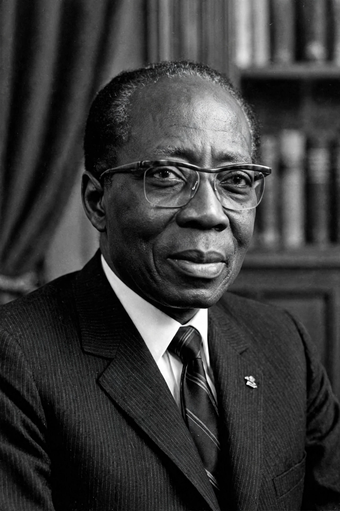

 | |
| Born | 9 October 1906, Joal, Senegal |
|---|---|
| Died | 20 December 2001, Verson, France |
| Office | President of Senegal, 1960–1980 |
Léopold Sédar Senghor (1906–2001) was a Senegalese poet, politician and cultural theorist who was the first president of Senegal (1960–1980) and a co-founder, with Aimé Césaire, of the concept of négritude.
Educated in Senegal and Paris (Sorbonne, first African agrégé in grammar), Senghor celebrated African values, rhythm and emotion as complements to European reason in négritude. A French deputy after WWII, he led Senegal to independence, first in the Mali Federation then as Senegal alone.
His African socialism stressed communal values, culture and arts — Dakar's 1966 World Festival of Black Arts, the École de Dakar. He governed as a dominant-party state, retired voluntarily in 1980 (succeeded by Abdou Diouf), and became the first African elected to the Académie française (1983).